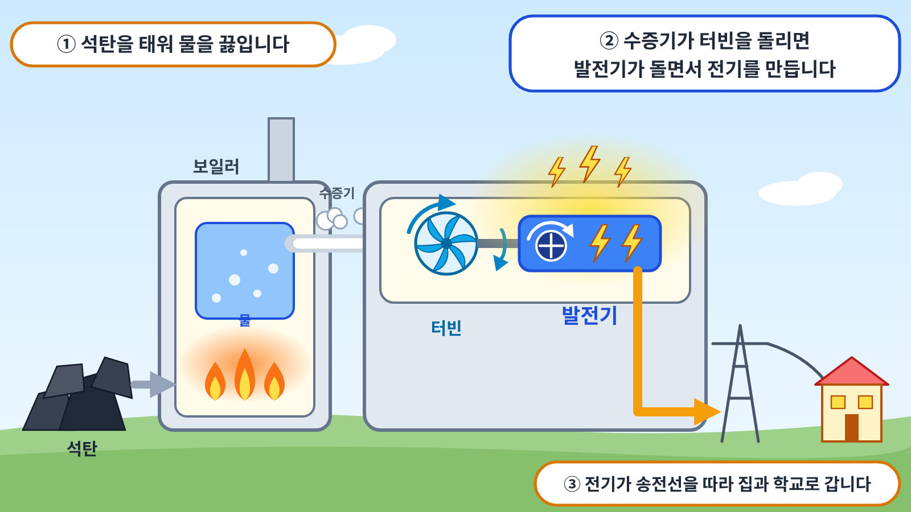

1석탄은 무엇일까요?
석탄은 땅속에서 캐내는 검은색 고체 연료입니다. 약 3억 년 전, 지구에는 거대한 나무와 고사리 같은 양치식물이 넓은 숲을 이루고 있었습니다. 이 식물들이 죽어 땅속에 묻힌 뒤, 수억 년 동안 높은 열과 압력을 받아 단단한 석탄으로 변했습니다. 이처럼 과거의 생물이 땅속에서 변해 만들어진 연료를 화석 연료라고 합니다.
석탄은 불에 잘 타고, 탈 때 많은 열을 냅니다. 1980년대까지 우리나라의 많은 가정에서는 석탄으로 만든 연탄으로 난방과 요리를 했습니다. 오늘날 석탄은 주로 전기를 생산하는 데 쓰입니다.
2석탄으로 어떻게 전기를 만들까요?
먼저 탄광에서 석탄을 캐내어 발전소로 운반합니다. 우리나라는 발전에 쓰는 석탄의 대부분을 외국에서 수입하며, 대형 선박으로 실어 옵니다. 그래서 우리나라의 석탄 발전소는 선박이 드나들기 쉬운 해안에 자리 잡고 있습니다. 특히 우리나라 석탄 발전소의 절반가량이 충청남도 보령, 태안, 당진 등 서해안에 모여 있습니다.

발전소에 도착한 석탄은 곱게 가루로 만든 뒤 보일러 안에서 태웁니다. 이때 발생한 열로 물을 끓이면 온도와 압력이 높은 수증기가 만들어집니다. 이 수증기가 터빈의 날개에 부딪히면서 터빈을 회전시킵니다. 터빈과 연결된 발전기가 함께 회전하면서 전기가 생산됩니다. 생산된 전기는 송전선을 거쳐 가정과 학교로 공급됩니다. 터빈을 회전시킨 수증기는 바닷물로 식혀 다시 물로 되돌린 뒤 재사용합니다.
3석탄 발전의 좋은 점은 무엇일까요?
석탄 발전소는 날씨나 시간의 영향을 받지 않고 전기를 생산할 수 있습니다. 바람이 약한 날이나 해가 진 밤에도 연료만 공급되면 계속 가동할 수 있습니다. 또한 한 곳에서 많은 양의 전기를 생산할 수 있으며, 오랫동안 사용해 온 방법이어서 기술이 안정되어 있습니다.
4석탄 발전에서 생각해 볼 점은 무엇일까요?
석탄을 태우면 이산화탄소가 많이 배출됩니다. 이산화탄소는 지구 밖으로 빠져나가야 할 열을 붙잡아 지구의 평균 기온을 높이는 온실가스로, 지구 온난화의 주요 원인입니다. 또한 석탄이 탈 때 나오는 연기에는 미세먼지와 같은 대기 오염 물질이 포함되어 있습니다. 이를 줄이기 위해 석탄 발전소에는 연기 속 오염 물질을 걸러 내는 장치가 설치되어 있습니다. 이러한 문제 때문에 우리나라는 석탄 발전소를 단계적으로 줄여 나가고 있습니다.